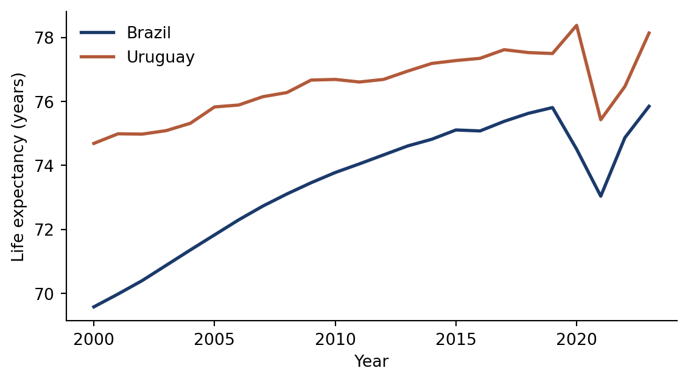

| Year | GDP per capita (US$) | Life expectancy |
|---|---|---|
| 2019 | 9,030 | 75.8 |
| 2020 | 7,074 | 74.5 |
| 2021 | 7,972 | 73.0 |
| 2022 | 9,281 | 74.9 |
| 2023 | 10,378 | 75.8 |
DATASCI 350 - Data Science Computing
Lecture 11 - Quarto in Practice
Hello, everyone! 😊
Recap of our last lecture
In our last class, we covered
- The reproducibility crisis: most results fail because the code does not run
- Habits that fix it: project structure, untouched raw data, relative paths, seeds, recorded versions
- Quarto: a YAML header, Markdown and code chunks
quarto renderbuilds a document;quarto previewkeeps a live one open- Every render is a restart-and-run-all test
- You rendered your first document. Today we put Quarto to work
Today’s lecture
Last class you rendered one HTML page. Today:
- Markdown beyond the basics: tables, footnotes, maths
- PDFs, and citations formatted from a
.bibfile freeze: rendering without re-running everything- Slides (like these) and websites, published free from GitHub
- Parameterised reports: one file, one report per country
- Two exercises, so keep your laptop charged
quarto publish. You build one todayMarkdown, PDFs, and citations 🛠️
Markdown you will use every week
| You type | You get |
|---|---|
**bold**, *italic* |
bold, italic |
~~scratch that~~ |
|
[text](url) |
a link |
 |
an image |
`code` |
code |
> quote |
a blockquote |
2^10^, H~2~O |
210, H2O |
footnote[^1] |
a numbered footnote |
- Tables use pipes and dashes. Colons set the alignment
- Maths is LaTeX between dollar signs:
$\mu = \frac{1}{n}\sum x_i$inline,$$ ... $$for display - Symbols: LaTeX Wiki. Everything else: Markdown Guide
- That is most of the language. Markdown is small on purpose
Markdown, raw and rendered
# Heading 1
This is a paragraph[^1].
## Heading 2
This is *italic*, this is `code`,
this is ~~strikethrough~~.
This is a [link](https://www.emory.edu).
Equation: $\mu = \frac{1}{n} \sum_{i=1}^{n} x_i$
List:
- Item 1
- Item 2
- Subitem 1
[^1]: This is a footnote.
| Header 1 | Header 2 | Header 3 |
|:---------|:--------:|---------:|
| Cell 1 | Cell 2 | Cell 3 |Heading 1
This is a paragraph1.
Heading 2
This is italic, this is code, this is strikethrough.
This is a link. Equation: \(\mu = \frac{1}{n} \sum_{i=1}^{n} x_i\)
List:
- Item 1
- Item 2
- Subitem 1
| Header 1 | Header 2 | Header 3 |
|---|---|---|
| Cell 1 | Cell 2 | Cell 3 |
Rendering Jupyter notebooks
- Quarto renders
.ipynbnotebooks as they are - Optionally, add a YAML header in a raw first cell, then run:
- By default Quarto uses the outputs stored in the notebook.
--executere-runs the code first - Python not found?
quarto check jupyterdiagnoses it; theQUARTO_PYTHONvariable fixes it - For long documents,
.qmdis nicer to write

The same notebook, rendered. More details here
PDFs
- Most journals, agencies and employers still want PDF
- PDFs go through LaTeX: TinyTeX, installed last class (
quarto install tinytex) - Then PDF is one flag:
- Notebooks too, with
--executeto re-run them:
- Fonts, margins and page size are YAML options (PDF basics guide)
Citations with BibTeX
- References by hand are slow and error-prone. BibTeX automates them
- A
.bibfile is plain text: one entry per source, each with a citation key (here,nash1950equilibrium) - Point your YAML at the file:
- Cite by key in your text:
@nash1950equilibrium→ Nash (1950)[@nash1950equilibrium]→ (Nash 1950)[@nash1950equilibrium, p. 48]→ (Nash 1950, 48)
- Quarto formats the citations and adds the reference list
- Change the style with
csl: apa.csl(thousands of styles)
- Cite it once or fifty times: the entry lives in one place
- Delete a citation and the reference list updates on the next render
- More in the Quarto citations guide
Where BibTeX entries come from
- You rarely type an entry by hand
- On Google Scholar, click Cite, then BibTeX, and paste into your
.bibfile - For bigger projects, use a reference manager. Zotero is free, open source, and exports
.bibfiles that stay in sync - Check imported entries: Scholar sometimes gets capitalisation and journal names wrong
Cross-references: the other @
A citation points outside your document; a cross-reference points inside it. Label the chunk, then use the label:
The last line renders as Rainfall peaks in March (Figure 1)
Tables take the label underneath, after a colon:
- The prefix tells Quarto what it numbers:
fig-,tbl-,eq-,sec-,lst- - With no prefix (
label: rainfall), the caption has no number - And
@rainfallprints “(rainfall?)” with a citation warning @sec-also needsnumber-sections: truein the YAML[-@fig-rain]prints the bare number, for use inside brackets- Add a figure mid-document and every number updates, in captions and text
- The same labels work in HTML and PDF
So never number by hand. A typed “Figure 3” is wrong once you add a Figure 2
Formatting LaTeX documents
- Quarto’s default PDF looks fine, but journals and universities often want a specific look
- LaTeX templates do that. Point your YAML at one:
- My templates (articles, syllabi, letters, CVs): https://github.com/danilofreire/quarto-templates
- Use them, or find others you like 😅
Try it yourself!
- Create a file called
practice.qmdin VS Code - Write a YAML header with
title,author,format: html, andbibliography: references.bib - Add a
##heading, a paragraph, a bulleted list, and a small Markdown table - Add a Python chunk that plots something (e.g.,
plt.plot) with these chunk options:#| echo: trueand#| eval: true#| fig-cap: "Your caption here"#| label: fig-myplot
- Reference the figure in your text with
@fig-myplot
- Create a
references.bibfile with one BibTeX entry (grab one from Google Scholar) - Cite it in your text with
@key - Render to HTML and to PDF:
Chunk options are on last class’s table. @fig- references point at fig- labels
Renders you can trust
The problem with re-rendering
- You finish a report in October. In November you fix a typo and render again
- Meanwhile, a new
pandasrelease changed one default - You edited one character. Three numbers in the results table changed
- A colleague asks why their printed copy disagrees with the website
Rendering re-computes: every render re-runs every chunk, changed or not
Your document did not change. Its surroundings did:
A package upgrade changes a default
An API returns today’s data instead of October’s
A random draw with no seed
Code that reads the clock or today’s date
A different machine with different versions
We want controlled re-execution: code re-runs only when the source changes
freeze: re-run only when the source changes
Put this in _quarto.yml for a project:
freezeonly works inside a project, when you runquarto renderwith no file namequarto render report.qmdalways re-runs the code, frozen or not
- Quarto runs the code once and stores the results in
_freeze/ - After that, a project render re-runs a document only when its source changes
freeze: auto: new code, new results. No change, same resultsfreeze: true: never re-run. For archival work, like a submitted paperfreeze: false: the default, always re-run
- Commit
_freeze/, so whoever clones your repository gets your numbers - Your site rebuilds in seconds, because only edited pages run again
What freeze does and does not do
What it does
- Controls when your code runs again
- Keeps October’s results until you touch the source
- Stops accidental re-computation
- Makes a render fast and predictable
What it does not do
- Control what your code runs with
- Survive deleting
_freeze/ - Protect a machine with other package versions
- Pin
pandasto the version you tested
So freeze postpones the problem. Module 08 pins the environment with uv and containers. Until then, use freeze: auto, commit _freeze/, and list your versions in the README
Presentations and websites
Slides with reveal.js
- Quarto makes slides with reveal.js, an HTML presentation framework
- These slides are Quarto + reveal.js!
- Why not PowerPoint?
- Plain text: diffs, version control, readable merge conflicts
- Code runs in the slides: charts update with the data
- Many formats: the same
.qmdcan become a PDF handout - Free hosting: push to GitHub, share a link
- Your first deck takes longer than dragging boxes. Your 50th is no harder than your 2nd
The YAML sets the format; headings do the rest:
#starts a section,##starts a new slideembed-resources: trueputs images and fonts into one self-contained file:::fenced divs handle layout: columns, centred text, font sizes- Chunks, images, tables and citations work as in a report
- Full reference: Quarto reveal.js docs
Two decks to learn from
- A minimal deck with text and images: simple-slides.html (source: simple-slides.qmd)
- This course’s template, with a custom theme, columns and modal images: quarto-presentation
Install the course template with:
Try on your own:
- Download
simple-slides.qmdand render it - Change the theme (e.g.,
theme: moon,theme: serif) - Add a two-column layout with
:::{.columns} - Add a code chunk that produces a plot
- Add a
{.smaller}class to a slide with a lot of text
Where to host slides
Both are free:
| Method | How it works | When to use |
|---|---|---|
| GitHub Pages | Enable in repo settings, serves from a branch | Permanent hosting, custom domain |
| Githack | Paste the GitHub link to any .html file |
Quick sharing, no setup |
You met GitHub Pages in module 02. With Githack, push your HTML, paste its URL at raw.githack.com and share the link
Paste a GitHub link, get a shareable URL. “Production” links cache permanently; “development” links pick up new commits within minutes
Websites
- Quarto websites are static: pre-rendered HTML, CSS and images, with no server-side code
- Fast to load, free to host, easy to version-control
- Used for course sites, documentation, portfolios, research blogs
- Free hosting on GitHub Pages, Netlify or Vercel
- No databases, logins or server logic. Those need a web framework (e.g. Flask, Django)
- More at quarto.org/docs/websites
- Example: https://www.mm218.dev/
The skeleton of a website
Every Quarto website has the same files:
| File | Purpose |
|---|---|
_quarto.yml |
Site config: title, navigation, theme |
index.qmd |
Home page (required) |
*.qmd |
Other pages: about, posts, docs |
styles.css |
CSS overrides (optional) |
- Each
.qmdbecomes a page, with navigation, footer and theme from_quarto.yml - A page’s own YAML usually holds only its title
Creating a website in VS Code
Four steps, left to right, then top to bottom:
Ctrl+Shift+P(orCmd+Shift+P), then run Quarto: Create Project- Pick Website Project from the list
- Choose a new, empty folder for it
- The project opens with
_quarto.yml,index.qmd,about.qmdandstyles.css. Click Preview
Click any screenshot to zoom in
Our course website
- The course site is the same kind of website, with a longer
_quarto.yml - Abridged on the right: navigation bar, GitHub link, footer, light and dark themes
- Full files on GitHub:
_quarto.ymlandindex.qmd - Copy from it freely! That is why it is public
project:
type: website
output-dir: docs
website:
title: "DATASCI 350"
repo-url: https://github.com/danilofreire/datasci350
navbar:
left:
- href: syllabus-web.qmd
text: Syllabus
- href: lectures.qmd
text: Lectures
- href: assignments.qmd
text: Assignments
page-footer:
left: "Copyright 2026, Danilo Freire."
execute:
freeze: auto
format:
html:
theme:
light: cosmo
dark: darkly
toc: truePublishing with one command
Quarto publishes to GitHub Pages with one command:
- It renders the site and pushes it to a separate
gh-pagesbranch - Your source stays on
main, free of rendered HTML - GitHub serves it at
https://username.github.io/repo-name/ - By hand: set
output-dir: docs, render, push, and choosemain→/docsin the Pages settings. The course site works this way - To update, edit the
.qmdand run the command again
One report, many inputs
Parameterised reports
- You need the same report for ten countries, every month, or for thirty students
- Copying the file ten times means one mistake to fix in ten places
- Write one report with a parameter: a value you set from outside the document
- In Python, a parameter is a variable in a cell tagged
parameters
- That value is the default. A normal render gives Brazil
- Override it with
-P:
- Quarto finds the cell by its tag. Without it,
-Pdoes nothing - Put the tagged cell first, above any code that uses it
- It needs one extra package:
A worked example: report.qmd
---
title: "Country profile"
format: html
jupyter: python3
---
```{python}
#| tags: [parameters]
country = "Brazil"
```
```{python}
#| echo: false
import pandas as pd
import matplotlib.pyplot as plt
profiles = pd.read_csv("data/country_profiles.csv")
one = profiles[profiles["country"] == country]
one = one.sort_values("year")
```
# `{python} country`
This report uses indicators for `{python} country`.
## Life expectancy over time
```{python}
#| echo: false
fig, ax = plt.subplots(figsize=(7, 3.5))
ax.plot(one["year"], one["life_expectancy"])
plt.show()
```- Real data: World Bank indicators for ten countries, 2000 to 2023, in
data/country_profiles.csv - The parameter filters the data, titles the report and appears in the text
`{python} country`is inline code: it puts a Python value into your text- No heading types “Brazil” by hand
- Only the default names a country. Change it, or pass
-P, and the document follows - The full file in the lecture folder also builds a table
What it produces
Rendered with the default, country = "Brazil":

Two of the ten countries. The report draws one, chosen by the parameter
From one report to a pipeline
One country, with its own file name:
Or all of them, with the shell loop from module 02:
Terminal
Three renders, three files:
- Ten or a hundred countries: same loop, longer list
- Quote
"$c": two of the ten names contain a space - Without
--output, every render overwritesreport.html - Find a mistake, fix one file, run the loop again
- Companies do the same, with the loop on a schedule
Your final project has this shape: one repository, one analysis, many countries
Try it yourself, again!
Download the report and run it from the terminal.
- Download
report.qmdandcountry_profiles.csv - Put
report.qmdin a new folder. Put the CSV in adatafolder beside it - Render the file with no options. You get Brazil
- Render it again for Japan. Give the output its own file name
- Open both HTML files. The heading, table and chart changed
- Render one more country whose name contains a space
Or download both from the terminal:
Terminal
Hints:
- The flag is
-P, and it takesname:value - Without
--output, your second render writes over the first - The CSV lists all ten countries. Two of the names contain a space
When the render fails
Three errors you will see this term:
Terminal
- Read Python errors from the bottom. The last line names the problem
- Quarto names the cell that broke
- A missing module usually means Quarto runs a different Python
- Read YAML errors from the top. The caret points at line 2, column 14: the unquoted colon
- Ignore the stack trace below it
- In LaTeX errors,
l.172is a line in the generated.tex, not your.qmd - The text beside it is yours, so search your file for it
- Render often, so the newest change is the likely culprit
When Quarto uses the wrong Python
Which Python does Quarto run? Ask it:
Terminal
Compare that path with which python3. If they differ, that is your error. Fixes:
Terminal
- The symptom:
ModuleNotFoundErrorfor a package you installed - Quarto finds Jupyter through
QUARTO_PYTHON, or elsepython3on yourPATH - The chunks run in the kernel: the one named in
jupyter:, or one Quarto picks - Fix 3 is the most reproducible: the choice lives in the document
- But every machine needs a kernel with that name
jupyter kernelspec listshows your kernels. Add the current environment with:
In VS Code, the Render button uses the interpreter chosen with Python: Select Interpreter, not the one active in your terminal
Summary
You can now build:
- An article with citations and numbered figures, in HTML and PDF, from one plain-text file
- A
_freeze/folder that keeps your results until you change them - Slides and a public website, with
quarto publish gh-pages - One parameterised report that a shell loop turns into ten reports
And why each matters:
freeze: autoseparates “I changed the code” from “the world changed”- Labels and
@references number everything for you - A website is a folder with a
_quarto.yml - Everything today was plain text, so it all lives in Git
Your final project uses this toolkit. Module 06 adds scripted data collection, and module 08 pins the environment
Next class
- New topic: local language models
- How large language models work, well enough to predict their failures
- A trained model is a file you can download. We open one and read its settings
- You build a chatbot with a personality you choose
- Install Ollama before class and run
ollama pull llama3.2:1b(1.3 GB). The classroom wifi cannot handle 25 downloads at once - Keep this week’s scepticism: you will need it

Additional materials
- Quarto: citations and footnotes
- Quarto: presentations
- Quarto: websites
- Quarto: parameterised documents
- papermill documentation, the engine behind
-P - CSL style repository, thousands of citation styles
- Zotero, the reference manager worth learning before your thesis
- Markdown Guide
- reveal.js demo, what HTML slides can do at full stretch
And now you know what Quarto can do! 😎
That’s all for today! 🎉
Appendix 01: Solution to the first exercise
The complete practice.qmd:
---
title: "My Quarto Document"
subtitle: "A simple example"
author: "Danilo Freire"
date: "2026-09-30"
format: html
bibliography: references.bib
---
## Introduction
This is a simple Quarto document.
As @nash1950equilibrium showed, games have equilibria.
This is @fig-sine.
- One bullet
- Another bullet
| Tool | Use |
|--------|-----------------|
| Quarto | Documents |
| Git | Version control |
```{python}
#| echo: true
#| eval: true
#| fig-cap: "Sine function"
#| label: fig-sine
import matplotlib.pyplot as plt
import numpy as np
x = np.linspace(0, 10, 100)
y = np.sin(x)
plt.plot(x, y)
plt.xlabel("x")
plt.ylabel("sin(x)")
plt.show()
```Render with:
The rendered output:
Key points:
#| label: fig-sinegives the figure a cross-reference label@fig-sinein the text creates a clickable link to itbibliography: references.bibtells Quarto where to find BibTeX entries@keycites from the.bibfile; the reference list is added automatically at the end
Appendix 02: Solution to the second exercise
Your folder should look like this before you render anything:
Steps 3 to 6, in order:
Notice:
- The first render writes
report.htmlfor Brazil, the default in the tagged cell - Without
--output, the Japan render would have overwritten the Brazil one South Africaneeds quotes. Unquoted, the shell splits the name, the filter matches nothing, and the render stops with aValueError
You never edited the report. You changed the input, which is the point of a parameter
To go further, change the default from Brazil to India and render with no options